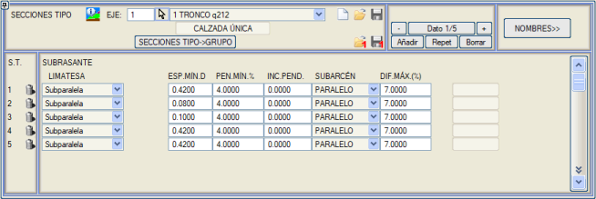
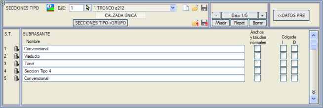
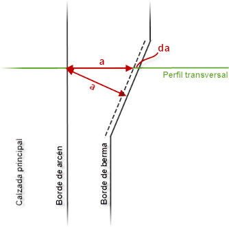
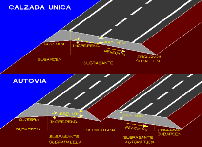
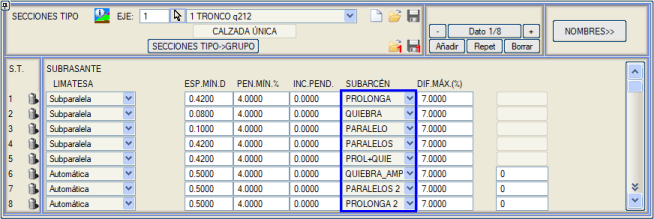
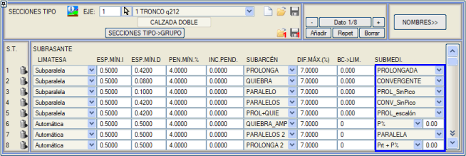

Bu bölümde, nihai platform ile toprak terasmanı arasındaki geometrik ilişkilerin yanı sıra, burada tanımlanan verilerle yakından ilişkili olan üstyapı katmanlarının kalınlığı veya seçme malzemeler gibi diğer unsurlar tanımlanır.

[İSİMLER >>] düğmesi, her tip kesite bir ad atamak için bir tabloya erişim sağlar; bu ad .vol dosyasına kaydedilir. Bu ad, ISPOL#.per dosyasını düzenlerken (# eksen numarasıdır) ve ayrıca boykesit paftalarında görünebilir.

Hesap bölgeleri tanım menüsünden de bu isimleri görüntülemek ve düzenlemek mümkündür.
Normal Genişlikler ve Şevler seçeneği, platform genişliğinin geçiş yaptığı bölgelerde palye, hendek ve yarma ile dolgu geometrisinin şevlerini ve genişliklerini genişletir, böylece girilen değerler eksene normal enkesit yerine platform kenarına (banket kenarı, yaya kaldırımı veya sabit platform) normal bir kesitte korunur.
Sağdaki şekil bu seçeneği mükemmel bir şekilde göstermektedir. Eğer bu örneğin palye genişliği (a) palyenin kendisine normal olarak ölçülseydi, ilgili KM'deki sonuç enkesit, bu düzeltme uygulandığında daha geniş bir palye (a + da) gösterirdi ve aynı durum hendek, şevler vb. için de geçerli olurdu.
Bu seçenek, büyük yaya kaldırımı genişliklerine ve kendi kavşak yarıçapına sahip bazı kavşak kollarında otomatik olarak etkinleştirilir.
Asılı: Bu özellik etkinleştirilirse, görüş mesafesi etütlerinde, kesit kırpılmamış olsa bile kesitin sonuna arazi eklenmez.
Terasman geometrisini tanımlamak için aşağıdaki veriler kullanılır; bunların anlamı çizim veya modelde açıklanmaya çalışılmıştır:

[MİN.KAL.S]
[MİN.KAL.D] |
Sol ve sağ platformlar için üstyapı katman paketinin minimum kalınlığı. Veri, üstyapı katman paketinin farklı katmanlarına verilen kalınlıklarla tutarlı olmalıdır.

|
Üstyapı katman paketlerinin maksimum kalınlığı 200 metredir. Bu, geometrisi kırmızı kot çizgisiyle ve kazı geometrisi terasman çizgisiyle tanımlanan barajların yapılmasına olanak tanır. |
|
ÇATI MAHYASI
|
Geometrik evrimi, seçilebilecek çeşitli davranış kalıplarına göre kırmızı kotun sahip olduğu evrimi takip eder:
- Otomatik: Üstyapı hacmini optimize etmek için çatı mahyasını otomatik olarak yerleştirir. Dever geçişleri sırasında, çatı mahyası ana platformların kenarları arasında kademeli olarak kayar. O noktada minimum kalınlık uygulanır ve oradan, ilgili kenarın yardımcı platform çizgisine ulaşmak için “terasmanın minimum eğimi” veya ilgili platformun deveri (hangisi daha büyükse) uygulanır.
- Alt Paralel: Çatı mahyasını geometrik eksenin altına (tek platformda) veya iç beyaz şeritlerin altına (çift platform durumunda) yerleştirir. O noktada yine minimum kalınlık uygulanır ve oradan, eğer artış pozitifse, üstyapının ana platformun dış tarafına doğru kalınlaşması için dever eğimi “eğim artışı” ile artırılarak ana platformun kenarına ulaşılır. Bu seçenek, çift deverli otoyolları dikkate alır.
- Genişletilmiş Otomatik: Çatı mahyası, otomatik durumda olduğu gibi oluşturulur, ancak ana platformun kenarlarında durmaz, aynı eğimle üstyapı katman paketinin birinci bileşeninden türetilen genişliğe kadar devam eder. Bu bileşen, bu duruma uygulandığında, üstyapı şevinin veya hendeğin onu kesmesine izin vermeden, genişlik olarak tam bir titizlikle tanımlanmalıdır. Üstyapının ilk katmanının genişlemelerinin banket kenarlarına göre tanımlanmasına izin verilir. Eğer metrajı ilgi çekmiyorsa, sıfır kalınlık verilebilir.
- Genişletilmiş Alt Paralel: Alt paralel durumunun geometrisiyle, üstyapının birinci bileşeninin genişliğine kadar ulaşır. Üstyapının ilk katmanının genişlemelerinin banket kenarlarına göre tanımlanmasına izin verilir.
- Bağımsız: Çatı mahyasının konumu, deverden veya dönme ekseninden bağımsız olarak kullanıcı tarafından yapılır. Bu durumda, terasman geometrisinin tanımı, platform tasarımına benzer şekilde [BAĞIMSIZ TERASMAN] menüsünden yapılır.
- Otomatik banket: Otomatik gibidir, ancak çatı mahyası dış banketin altına, kenarına kadar geçebilir. Otoyollarda, bu seçenek etkinleştirilirse, otomatik çatı mahyası iç banketin iç kenarından (kod -11) dış banketin dış kenarına (kod 11) kadar kayabilir.
-
Otomatik 1 m: Otomatik çatı mahyası, kurpta banket kenarından (kod 11) bir metreye kadar ulaşabilir. Ayrıca, alt refüj eğimle tanımlanırsa, iç kırılma da iç banket kenarına (kod -11) bir metre kala gerçekleşir. Bu etkiyi elde etmek için önceki sürümlerde gerekli olduğu gibi, üstyapı katmanlarında herhangi bir şey tanımlamak artık gerekli değildir.
Bir metreden dar banketler veya banketsiz platformlar için, çatı mahyasının kayma sınırı platform kenarından (kod 2) bir metreye kadar içeride kalabilir.
-
Alt Paralel 1 m: Genişletilmiş alt paralel'e benzer, ancak bu durumda terasmanın kırılması banket kenarına (kod 11) bir metre kala gerçekleşir. Ayrıca, alt refüj eğimle tanımlanırsa, iç kırılma da iç banket kenarına (kod -11) bir metre kala gerçekleşir. Bu etkiyi elde etmek için önceki sürümlerde gerekli olduğu gibi, üstyapı katmanlarında herhangi bir şey tanımlamak artık gerekli değildir.
- Sıfırsız Alt Paralel: Deverin minimum eğimden daha düşük olduğu durumlar dışında alt paralele özdeştir. Örnek: Minimum eğimi %1 olan bir kurptan çatı eğimine geçiş. Deverden çatı eğimine geçiş durumunda, bu bölgede, minimum eğimin altına düşen tarafta, dışarıya ve eksene doğru minimum eğimle dış kenardan eksene doğru kayan bir çatı mahyası belirir. Kurp ve karşı kurp durumunda, minimumdan daha düşük dever bölgesinde çatı mahyası yüksek kenarda belirir, dever sıfır olduğunda eksenden geçer ve her iki tarafa doğru minimum eğimle diğer kenarda sona erene kadar devam eder. Sınır kenarı, banket kenarı (Alt Banket DAHİL) veya platform kenarı (Alt Banket HARİÇ) olabilir.
Alt banket HARİÇ tipinde olduğunda, banket altındaki terasman eğimi alt banket PARALEL gibi davranır.
Ayrıca, EĞİM% kutusundan başlayarak, belirli bir değer uygularsak yalnızca çatı eğimi bölgelerini etkileyecek bir nominal eğim de ekleyebiliriz.
- Genişletilmiş Alt Paralel 2: Genişletilmiş alt paralel gibi çalışır (yani, üstyapının ilk bileşeninin genişliğine kadar ulaşır) ancak üstyapı katman paketinin minimum kalınlığını, banket bölgesinde (kırmızı kotun 2 ve 11 kodları arasında) bulunsa bile, terasmanın 2 kodu üzerinde de kontrol eder.
|
MİN.EĞİM (%)
|
Otomatik çatı mahyası durumunda, ana platform ve banketler altındaki terasmanın minimum eğimini tanımlar. Alt paralel durumunda, yalnızca banketler altında kullanılır. Veri % olarak verilir.
|
EĞİM ARTIŞI %dever(Mahya->PK)
|
Alt paralel çatı mahyası durumunda, platform altındaki terasman, platformla aynı eğime sahiptir ve burada tanımlanan açıda (eğim artışı) dış taraflara doğru kalınlaşır.
Otomatik, genişletilmiş otomatik, banket otomatik ve 1 metre otomatik tipindeki terasmanlar için, terasmanın minimum eğimine ek olarak ikinci bir kontrol parametresi vardır: %dever (Mahya->PK). Bu değer, minimum eğime eşit veya daha küçük olmalıdır ve ana platformun deverini sınırlar; bu değerin altında çatı mahyasının platformun bir tarafından diğerine kayması gerçekleşir. Ana platformun deveri bu değere ulaştığında, çatı mahyası öngörülen kenara ulaşır ve terasmanın eğimi o zaman öngörülen minimumdur, ta ki platformun deveri bu değeri aşana kadar; o zaman platform ve terasman paralel olacaktır.
|
ALT BANKET
|
Banketler altındaki terasman eğimi, aşağıdaki olasılıkların bulunduğu bir kontrolle minimum eğim tarafından tanımlanır:

- Uzatma: Alt banket, ana platform terasmanının uzantısı olarak yerleştirilir.
- Kırılma: Alt banket eğimi için terasmanın minimum eğimi uygulanır. Ana platformla olan dever farkı izin verilen maksimum değeri aşarsa, bu maksimum değere eşit bir farkla yerleştirilir.
- Genişletilmiş Kırılma: Kırılma tipine benzer, ancak iç alt banketin iç kırılma noktası (alt banket-alt refüj) üstyapının ilk katmanının iç ayağına kadar kaydırılır.
- Paralel: Alt paralel terasman durumunda, bu seçenek banket altındaki terasmanı, ana platformun deverinden bağımsız olarak banketin deveriyle oluşturur. 3 ve 4 numaralı banketlerin altında 2'nin eğimini uzatır.
- Paraleller: Terasmanı 2, 3 ve 4 numaralı banketlere paralel olarak götürür.
- Uzatma ve Kırılma: Banket altında uzatılmış tip gibi ve ardından palye altında kırılma gibi çalışır, vb.
- Tablosal: Kütüphanede bulunan, aşağıda gösterildiği gibi .sra uzantılı tablolardan biri kullanılır:
######################################################################
# TERASMAN: EĞİM TABLOSU (TABLOSAL terasmanda kullanılmak üzere) #
# Sağ platform için veriler, sol simetrik.
#
# ALT PARALEL için kırmızı kot eğimi ilk sütunda enterpole edilir#
# elde edilen ağırlık faktörü, diğer sütunlarda doğrusal olarak enterpole etmek için kullanılır #
# ana platform, iç banket ve refüj (çift platform) ve dış banketler altındaki eğimler #
# altına uygulanacak eğimler.
#
# OTOMATİK için platform ve iç banket için MİNİMUM EĞİM kullanılır #
# Psubplatform ve Psubbanket 1 sütunları dikkate alınmaz #
# (tabloyu ALT PARALEL kontrolüyle kullanmak için tanımlanmaları tavsiye edilir). #
######################################################################
# P-4i-Q7e.sra (paralel | %4 iç | %7 dış limitli %4 kırılma) #
######################################################################
#
KırmızıKotEğimi
AltPlatformEğimi AltBanket 1 AltBanket
2
#
#
-------
---------- ---------
---------
#
PSB -100. -100. -100. -93.
PSB
-4.
-4.
-4. 3.
PSB
-3.
-3.
-4. 4.
PSB
0.
0.
-4. 4.
PSB
4.
4.
-4. 4.
PSB 100.
100. -4.
100.
######################################################################
#
son
#
#
---
#
SON
#
######################################################################
- Paraleller 2: Terasmanı 1 (iç), 2, 3 ve 4 numaralı banketlere paralel olarak götürür.
- Uzat 2: Palye altındaki bölgedeki terasman eğimi, önceki segmentin uzantısıdır. Platform altındaki terasmanın deverinden farklı olabilir, çünkü sabit platformun veya yaya kaldırımlarının vektörlerinden alınabilir.
- Kırılma-Uzatma: Sol kenar için Kırılma ve sağ için Uzatma.
- Uzatma-Kırılma: Sağ kenar için Uzatma ve sol için Kırılma.
Alt paralel çatı mahyası tanımı için, kırmızı kot eğiminin bilinen değeri tablonun ilk sütunundaki veriler arasında enterpole edilir; elde edilen ağırlık faktörü, diğer sütunlarda, ana platform, iç yardımcı platform ve refüj (eğer çift platform ise) ve dış yardımcı platformlar altındaki eğimleri doğrusal olarak enterpole etmek için uygulanır.
Eğer çatı mahyası [OTOMATİK] olarak beyan edilirse, tablodaki AltPlatformEğimi ve AltBanket 1 sütunları dikkate alınmadan, ana platform ve iç yardımcı platform altında minimum eğim verisi kullanılır; bununla birlikte, tabloyu alt paralel kontrolüyle kullanmak için bunları tanımlamak tavsiye edilir; tablonun geri kalanı enterpolasyon için kullanılır.
Ayrıca, iç alt banketin ve iç alt platformun enine eğiminin iç şeridin deverine bağlı olduğu ( çift deverli otoyollarda olduğu gibi) tablosal terasman için tablolar oluşturma imkanı da düşünülmüştür. Kütüphanede, bu imkanı kullanan Quebec_Dob_Per.sra tablosu bulunmaktadır.
|
|
MAKS.FARK (%)
|
Alt banketin enine eğimi ile ana platform arasındaki izin verilen maksimum fark.
|
|
PK->MAHYA |
Alt paralel ve genişletilmiş alt paralel tipindeki terasmanlarda, otoyollarda platform kenarına veya karayollarında merkeze göre çatı mahyasını sabit bir miktarda kaydırmaya olanak tanır.
|
|
MAHYA->ÜK |
Otomatik ve genişletilmiş otomatik terasmanda çatı mahyasının son konumunu platform kenarı ile banket kenarı arasında hareket ettirmeye olanak tanır. Bu son nokta, bir üstyapı katmanının omuz konumu ile tanımlanır. O zaman program, dış banket kenarını aşmadığı sürece, o katmanın dış genişlemesini çatı mahyası için en dış konum olarak kullanır. Otoyollar durumunda, iç banket kenarını aşmadığı sürece, o katmanın iç genişlemesi çatı mahyası için en iç konum olarak kullanılır. Sadece DışG ve İçG değerleri çatı mahyasının son konumunu kontrol etmek için ilgi çeken, devre dışı bırakılmış bir üstyapı katmanı kullanılabilir.
|
ALT REFUJ
|
Alt refüjün davranışını iç banketin iç kenarından içeriye doğru tanımlamaya olanak tanır.

Çeşitli seçenekleri destekler:
- Uzatılmış: Refüjü kesene kadar eğimi takip ederek uzatılırlar. Eğer refüjü en yüksek noktada kesmezlerse, geometrik eksende en alttaki ile bir köşe oluşturacak şekilde eğim verilir.
- Yakınsak: Geometrik eksene doğru uzatılırlar ve en alttaki ile bir köşe oluşturacak şekilde en yükseğin eğimi değiştirilir. Daha sonra refüjü kesip kesmedikleri analiz edilir.
- Tepe Noktasız Uzatılmış: Uzatılmış gibidir, ancak refüjü keserlerse, refüjün tepe noktası kaldırılır ve iki kesişim noktasından düz bir bölümle birleştirilirler.
- Tepe Noktasız Yakınsak: Yakınsak gibidir, ancak refüjü keserlerse, refüjün tepe noktası kaldırılır ve iki kesişim noktasından düz bir bölümle birleştirilirler.
- Basamaklı Uzatılmış: Uzatılmış gibidir, ancak her iki taraf da refüjü kesmezse ve eksende farklı kotlara sahiplerse, burada bir basamak oluşur.
- Eğim %: Refüjdeki terasman eğimi, üstyapının ilk katmanının (en alttaki) iç ayağından veya bunun yerine alt banketin iç noktasından (uzatılmış alt banket önerilir) başlayarak tanımlanır. Bu modda, alt refüjün refüjle kesişme olasılığı vardır.
- Paralel: Terasman, refüj bölgesinde kırmızı kota paralel olarak oluşturulur.
- Dever + alt refüj eğimi: Davranışı aşağıdaki gibidir:
- Eğer dever refüje doğru akıyorsa, dever + eğim uygulanır.
- Eğer dever dışarıya doğru akıyorsa, eğim uygulanır.
- Eğer kesitin geometrik ekseninde iki taraftan biri daha alçakta kalırsa, diğeri ona doğru yakınlaştırılır.
Bu modda, alt refüjün refüjle kesişme olasılığı vardır.
- Yakınsak + derinlik: Bu durumda, tepe noktası tam olarak refüjün tepe noktasının altında, belirtilen derinlikte olan yakınsak bir alt refüj yapılır. Bu derinlik, örneğin refüj hendeğinin kalınlığına denk gelebilir. İç eğim asla nominal eğimden daha düşük olmamalıdır.
- Düz: Bu alt refüj, -11 kodlu iki noktayı (iç banketin iç kenarındaki terasman) düz bir bölümle birleştirerek oluşturulur.
- Genişletilmiş + derinlik: Yakınsak + derinlik gibidir, ancak alt banket ile alt refüj arasındaki çatı mahyası (kod -11) üstyapının ilk katmanının iç ayağına kaydırılır.
- Uzatılmış + derinlik: Uzatılmış'a benzer, ancak kırmızı kotu derinlik değeri kadar kaydırılmış olarak keser. Kaplama kalınlığı derinliğe eşit olan kaplamalı refüjler yapmak için kullanılır.
- Yakınsak + Eksantrisite: Alt refüj tepe noktasının eksantrisitesi için bir değer verilir. Düzlüklerde yakınsak alt refüjler gibi davranır. Dairesel kurpta, alt refüjün tepe noktası, girilen eksantrisite değeri kadar kurbun iç tarafına doğru kayar ve kurbun dış tarafındaki terasmanı o noktaya kadar eğimiyle uzatır. İç taraftaki terasman, 1 kodunun altındaki noktadan o noktaya, uygun eğimle iner.
Klotoidlerde alt refüj tepe noktasının geçişi yapılır.
- E+M: Bu yeni tip alt refüj, (%) cinsinden bir enine eğim ve refüj tepe noktasına olan bir mesafe ile tanımlanır; bu tepe noktası geometrik eksenle çakışmayabilir. Terasmanın 1 kodundan, refüj tepe noktasının konumu + M'ye kadar E eğimiyle inilir. Daha sonra, daha yüksekte kalan tarafın eğimi, daha alçaktakinin konumuna getirmek için değiştirilir. (M mesafeleri sağa doğru pozitif, sola doğru negatif olarak verilir.)
- E+M Basamak: E+M (eğim + mesafe) tipine benzer, ancak bu durumda M mesafesinde farklı kotlara sahiplerse, daha alçak olana gitmek yerine basamak korunur.
- UZAT(Y) E%(D): Alt refüj tamamen yarmada olduğunda UZATILMIŞ modunda yapılır. Dolguda olduğunda, örneğin %60'lık bir tepe noktası ile E% ile yapılır. Eğer bu tepe noktası alçak bir dolgu olduğu için araziyi keserse, o zaman tepe noktasının arazinin altından geçtiği bölgede, araziye oturur.
- GENİŞ (Y) E% (D): Refüj tamamen yarmada olduğunda GENİŞLETİLMİŞ (derinlik=0) gibi davranır ve dolguda belirtilen eğimle araziye değene kadar gider ve bu durumda arazi boyunca devam eder.
|
[1'i Kaydet] ve [1'i Yükle] düğmeleri, veri menüsünün ilk satırını kaplayan tip kesite ait tüm verileri kaydetmeye ve geri yüklemeye olanak tanır; bu, örneğin, çok benzer olan başka bir tip kesite bir tip kesitin değerlerini yüklemek için çok kullanışlıdır. Bunun için .stp uzantılı dosyalar kullanılır.
Öncekilerden farklı olarak, [Kaydet]  ve [Yükle] ve [Yükle]  düğmeleri, sırasıyla TÜM tip kesit setini yine .stp uzantılı dosyalar aracılığıyla kaydeder ve geri yükler. düğmeleri, sırasıyla TÜM tip kesit setini yine .stp uzantılı dosyalar aracılığıyla kaydeder ve geri yükler.
|